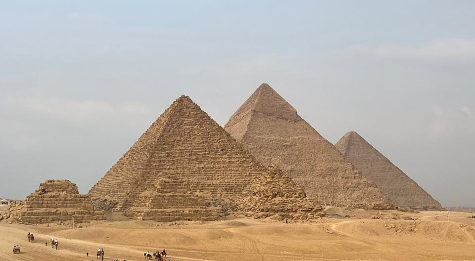

Before I delved into the world of product design, I embarked on a path as a web developer, eventually transitioning into the role of a front-end teacher. My journey began with a deep dive into the intricacies of HTML, CSS, and JavaScript, laying the foundation for everything to come. As a front-end teacher, my mission extended beyond mere instruction; it was about empowering others with the skills to craft beautiful and functional digital experiences. Guiding students through the complexities of web development, I found immense satisfaction in witnessing the spark of understanding illuminate their faces as they conquered new concepts and techniques.
Originating from Giza, Egypt, my quest for knowledge led me to the United Arab Emirates, where I currently pursue my studies at NYU Abu Dhabi. Even amidst the rigors of academia, I remain dedicated to nurturing my passion for teaching and technology.
Beyond the classroom, I find solace and inspiration in the simple pleasures of life. Whether it's savoring a freshly brewed cup of coffee by the tranquil shores of the sea, immersing myself in the melodies of music, embarking on adventures with my partner, or reveling in the playful antics of my beloved Labrottie pup, Louie, each moment is a testament to the beauty of learning, discovery, and connection.



 Instagram
Instagram ahs9048@nyu.edu
ahs9048@nyu.edu Github
Github LinkedIn
LinkedIn